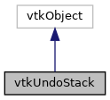

|
ACloudViewer
3.9.4
A Modern Library for 3D Data Processing
|
|
ACloudViewer
3.9.4
A Modern Library for 3D Data Processing
|
#include <vtkUndoStack.h>


Public Types | |
| enum | EventIds { UndoSetRemovedEvent = 1989 , UndoSetClearedEvent = 1990 } |
Public Member Functions | |
| vtkTypeMacro (vtkUndoStack, vtkObject) | |
| void | PrintSelf (ostream &os, vtkIndent indent) override |
| virtual void | Push (const char *label, vtkUndoSet *changeSet) |
| const char * | GetUndoSetLabel (unsigned int position) |
| const char * | GetRedoSetLabel (unsigned int position) |
| unsigned int | GetNumberOfUndoSets () |
| unsigned int | GetNumberOfRedoSets () |
| int | CanUndo () |
| int | CanRedo () |
| virtual vtkUndoSet * | GetNextUndoSet () |
| virtual vtkUndoSet * | GetNextRedoSet () |
| virtual int | Undo () |
| virtual int | Redo () |
| void | PopUndoStack () |
| void | PopRedoStack () |
| void | Clear () |
| vtkGetMacro (InUndo, bool) | |
| vtkGetMacro (InRedo, bool) | |
| vtkSetClampMacro (StackDepth, int, 1, 100) | |
| vtkGetMacro (StackDepth, int) | |
Static Public Member Functions | |
| static vtkUndoStack * | New () |
Protected Member Functions | |
| vtkUndoStack () | |
| ~vtkUndoStack () override | |
Protected Attributes | |
| int | StackDepth |
Definition at line 16 of file vtkUndoStack.h.
| Enumerator | |
|---|---|
| UndoSetRemovedEvent | |
| UndoSetClearedEvent | |
Definition at line 18 of file vtkUndoStack.h.
|
protected |
Definition at line 23 of file vtkUndoStack.cxx.
References StackDepth.
|
overrideprotected |
Definition at line 32 of file vtkUndoStack.cxx.
|
inline |
Returns if redo operation can be performed.
Definition at line 66 of file vtkUndoStack.h.
Referenced by GetNextRedoSet().
|
inline |
Returns if undo operation can be performed.
Definition at line 61 of file vtkUndoStack.h.
Referenced by GetNextUndoSet().
| void vtkUndoStack::Clear | ( | ) |
Clears all the undo/redo elements from the stack.
Definition at line 38 of file vtkUndoStack.cxx.
References UndoSetClearedEvent.
|
virtual |
Get the UndoSet on the top of the Redo stack, if any.
Definition at line 168 of file vtkUndoStack.cxx.
|
virtual |
Get the UndoSet on the top of the Undo stack, if any.
Definition at line 158 of file vtkUndoStack.cxx.
| unsigned int vtkUndoStack::GetNumberOfRedoSets | ( | ) |
Returns the number of sets on the undo stack.
Definition at line 68 of file vtkUndoStack.cxx.
| unsigned int vtkUndoStack::GetNumberOfUndoSets | ( | ) |
Returns the number of sets on the undo stack.
Definition at line 62 of file vtkUndoStack.cxx.
| const char * vtkUndoStack::GetRedoSetLabel | ( | unsigned int | position | ) |
Returns the label for the set at the given Redo position. 0 is the next set to redo, 1 is the one after the next one and so on.
Definition at line 85 of file vtkUndoStack.cxx.
| const char * vtkUndoStack::GetUndoSetLabel | ( | unsigned int | position | ) |
Returns the label for the set at the given Undo position. 0 is the current undo set, 1 is the one preceding to the current one and so on.
Definition at line 74 of file vtkUndoStack.cxx.
|
static |
| void vtkUndoStack::PopRedoStack | ( | ) |
Pop the redo stack. The UndoElement on the top of the redo stack is popped and then pushed on the undo stack. This is same as Redo() except that vtkUndoElement::Redo() is not invoked.
Definition at line 146 of file vtkUndoStack.cxx.
Referenced by Redo().
| void vtkUndoStack::PopUndoStack | ( | ) |
Pop the undo stack. The UndoElement on the top of the undo stack is popped from the undo stack and pushed on the redo stack. This is same as Undo() except that the vtkUndoElement::Undo() is not invoked.
Definition at line 134 of file vtkUndoStack.cxx.
Referenced by Undo().
|
override |
Definition at line 178 of file vtkUndoStack.cxx.
References QtCompat::endl(), and StackDepth.
|
virtual |
Push an undo set on the Undo stack. This will clear any sets in the Redo stack.
Definition at line 47 of file vtkUndoStack.cxx.
References UndoSetRemovedEvent.
|
virtual |
Performs a Redo using the set on the top of the redo stack. The set is poped from the redo stack and pushed at the top of the undo stack. Before redo begins, it fires vtkCommand::StartEvent and when redo completes, it fires vtkCommand::EndEvent.
Definition at line 115 of file vtkUndoStack.cxx.
References PopRedoStack().
|
virtual |
Performs an Undo using the set on the top of the undo stack. The set is poped from the undo stack and pushed at the top of the redo stack. Before undo begins, it fires vtkCommand::StartEvent and when undo completes, it fires vtkCommand::EndEvent.
Definition at line 96 of file vtkUndoStack.cxx.
References PopUndoStack().
| vtkUndoStack::vtkGetMacro | ( | InRedo | , |
| bool | |||
| ) |
Returns if the stack is currently being redone.
| vtkUndoStack::vtkGetMacro | ( | InUndo | , |
| bool | |||
| ) |
Returns if the stack is currently being undone.
| vtkUndoStack::vtkGetMacro | ( | StackDepth | , |
| int | |||
| ) |
| vtkUndoStack::vtkSetClampMacro | ( | StackDepth | , |
| int | , | ||
| 1 | , | ||
| 100 | |||
| ) |
Get set the maximum stack depth. As more entries are pushed on the stack, if its size exceeds this limit then old entries will be removed. Default is 10.
| vtkUndoStack::vtkTypeMacro | ( | vtkUndoStack | , |
| vtkObject | |||
| ) |
|
protected |
Definition at line 142 of file vtkUndoStack.h.
Referenced by PrintSelf(), and vtkUndoStack().